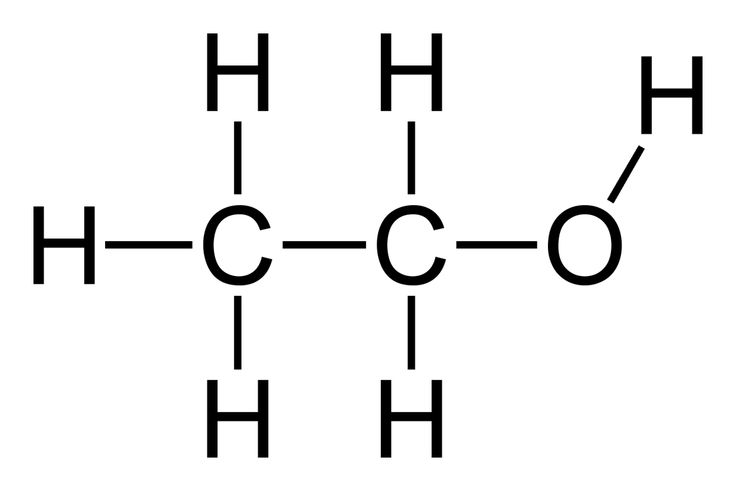

Manuel Watson
Watson's dependency on alcohol began at an early age, but only worsened when he was diagnosed with AIDs in 1992.
Listen to Watson share his struggle with alcohol below.
"I tried to destroy myself completely after the news."
Alcohol
| Street Price |
|---|
| $6.99 - $12.99 |
| Addictiveness Potential |
| 2.4 |
Usage Rates
Very common and socially acceptable ---
Abuse rates hover around one in five. More than 1,700 New Yorkers die from alcohol related causes each year. One in ten hospitalizations in New York City is alcohol-related. (NYC DOHMH)
Origin/Synthesis:
From around 6000-4000 BCE, people began using grapes to make wine in what is not modern Armenia. Later between 3000-2000 BCE, beer production from grains began in Mesopotamia. Beer and wine spread around the Mid-East and Near East, making their way to Europe. Grain alcohol production began in Europe in the Middle Ages.
Highs and Lows
Highs
Physical
- Pain killer
Mental
- Relaxation
- Mood lift
- Happiness
- Increased sociability
- Lowers inhibitions/social anxiety

Lows
Physical
- Decreased coordination
- Nausea, vomitting
- Slurring speech
- Drowsiness, sleepiness
- Nystagumus (twitching eyes)
- Frequent urination
- Erectile dysfuntion
- Blackouts
- Brain and liver damage
- Coma and death at extreme dosages
- Hangover
- Fetal damage
Mental
- Emotional volatility
- Decreased ability to reconize own impairment
- Confusion